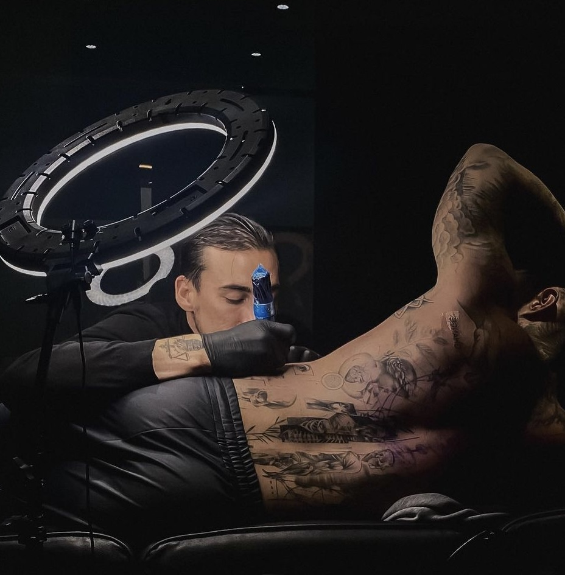
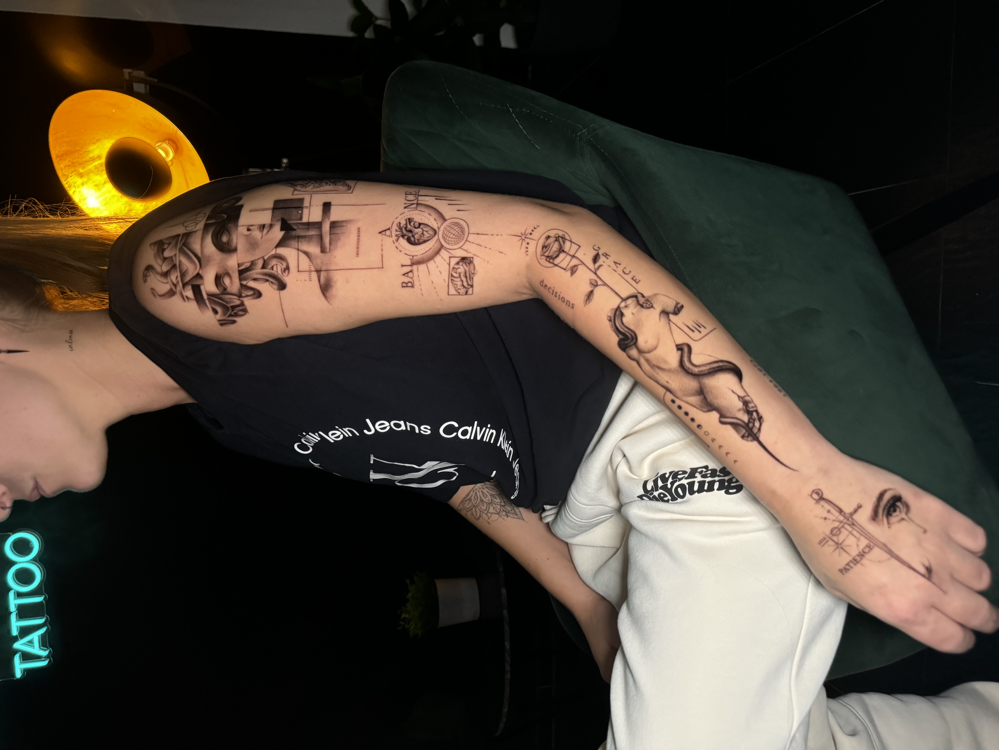
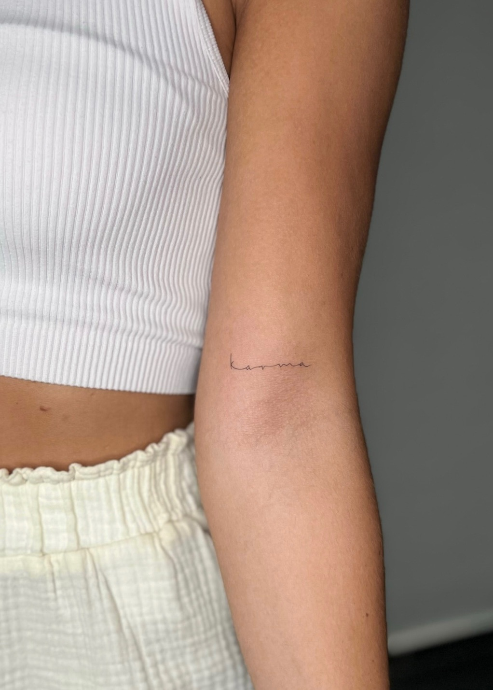

Traveling fine line & micro realism artist. Turning skin into a canvas that breathes.
A tattoo is more than ink beneath the skin. It's an affirmation written into your body — a piece of your soul, made visible. In a world where we take nothing with us, your body is the one thing that is truly yours.

Services

Conceptual Tattoo
Symbolic, abstract, deeply personal. Art that carries meaning beyond what the eye sees — designed to tell your story in a language only you fully understand.
Microrealistic
Photographic precision in miniature. Portraits, nature, objects — captured with breathtaking detail at an intimate scale. Every look reveals something new.

Fineline Minis
Delicate, elegant, understated. The finest lines and the softest shading — small pieces that prove less is more. Quiet masterpieces for the skin.
The Artist
Art was never a hobby for Roman — it was his language. While others drew to pass the time, he drew to understand. To feel. To express what words never could.
At sixteen, he began his professional journey as a glass painter — learning how light breaks through color, how a window can tell a story. But glass had its limits. Beautiful, yes. But silent. Lifeless. Without pulse.
He wanted to work on a canvas that breathes. One that feels, moves, lives. A canvas with a story of its own. That's how he found tattooing.
A tattoo is more than ink beneath the skin. It is a decision that runs deeper than any other form of art. It becomes part of you — your energy, your expression, your identity. Like an affirmation you carry forever. A goal written into your skin. A piece of your soul, made visible.
In a world where we take nothing with us, our body is the one thing that is truly ours — from the first breath to the last. The only thing we carry into this world and out of it.
Roman's art honors that. Every tattoo is a ceremony. A conscious act. Micro realism and fine line — precision in the smallest space. Details you discover on the second look. The finest lines, the most delicate shading, a living depth. No loud effects. Only quiet masterpieces that speak for themselves.
Roman is a traveling artist working across multiple studios — currently at Body Upgrade Tattoo in Düsseldorf & Lahnstein (Germany) and r.tattoo in Wien (Austria). Available for guest spots at studios worldwide, tattoo conventions, private tattoo events, and brand collaborations. Whether you're a studio looking for a guest artist or planning an exclusive event, let's make it happen.
"An incredible artist with a gentle soul. Roman turned my vision into something more beautiful than I imagined. The attention to detail is unreal."
— Client Review
★★★★★
"The most intentional tattoo experience I've ever had. Roman truly listens and creates art that feels like it was always meant to be on your skin."
— Client Review
★★★★★
"Pure precision. The fine lines are flawless and the micro realism is breathtaking. More than a tattoo — it's a piece of art I carry with me."
— Client Review
Häufige Fragen
Alles beginnt mit einer Beratung — entweder vor Ort oder per Nachricht. Wir sprechen über deine Vision, das Motiv, die Platzierung und die Größe. Anschließend erstelle ich ein individuelles Design für dich. Am Tag des Termins nehmen wir uns ausreichend Zeit: Die Vorlage wird auf die Haut übertragen, gemeinsam perfektioniert, und dann beginnt die eigentliche Session in ruhiger, entspannter Atmosphäre. Jeder Termin ist ein bewusster, kreativer Prozess — keine Fließbandarbeit.
Komm ausgeschlafen und gut gegessen zu deinem Termin. Trinke am Tag davor und am Tattoo-Tag ausreichend Wasser. Vermeide Alkohol und blutverdünnende Medikamente mindestens 24 Stunden vorher. Trage bequeme Kleidung, die leichten Zugang zur gewünschten Stelle ermöglicht. Verzichte auf Sonnenbrand oder frisch gebräunte Haut im Tattoo-Bereich. Wenn du dich gut fühlst, wird auch das Ergebnis besser — Körper und Geist arbeiten zusammen.
Nach der Session erhältst du eine ausführliche Pflegeanleitung. Grundsätzlich gilt: Halte das Tattoo in den ersten Tagen sauber und feucht (mit einer empfohlenen Pflegecreme). Vermeide Sonneneinstrahlung, Schwimmbäder, Saunen und übermäßiges Schwitzen für mindestens zwei Wochen. Nicht kratzen, auch wenn es juckt — das ist Teil des Heilungsprozesses. Dein Tattoo ist ein Kunstwerk, das Pflege verdient, um langfristig perfekt auszusehen.
Das hängt von Größe und Detailgrad des Motivs ab. Kleine Fineline Minis können in ein bis zwei Stunden fertig sein. Aufwendigere Micro-Realism-Arbeiten brauchen oft drei bis sechs Stunden — manchmal auch mehrere Sitzungen. Ich nehme mir die Zeit, die dein Tattoo verdient. Qualität geht immer vor Geschwindigkeit.
Jedes Tattoo ist ein Unikat, deshalb variiert der Preis je nach Größe, Detailgrad und Aufwand. Gerne erstelle ich dir nach einem Beratungsgespräch ein individuelles Angebot. Schreib mir einfach eine Nachricht mit deiner Idee, einer Referenz und der gewünschten Körperstelle — dann kann ich dir eine Einschätzung geben. Gute Kunst braucht faire Wertschätzung.
Ehrlich gesagt: Ja, ein bisschen. Aber die meisten meiner Kunden beschreiben es als gut aushaltbar — besonders bei Fineline-Arbeiten, da die Nadeln sehr fein sind. Das Schmerzempfinden ist individuell und hängt auch von der Körperstelle ab. Empfindlichere Bereiche wie Rippen, Innenseite der Arme oder Finger spürt man intensiver. Aber keine Sorge — wir machen Pausen, wann immer du sie brauchst. Der Prozess soll sich gut anfühlen.
Natürlich! Du kannst Vorlagen, Skizzen, Fotos oder Moodboards mitbringen. Ich nutze deine Inspiration als Grundlage und entwickle daraus ein einzigartiges Design, das perfekt zu dir, deinem Körper und meinem künstlerischen Stil passt. Gemeinsam finden wir die ideale Umsetzung für deine Vision.
Grundsätzlich funktionieren Fineline- und Micro-Realism-Tattoos an vielen Körperstellen. Besonders gut eignen sich Unterarme, Oberarme, Schultern, Waden und der obere Rücken — Stellen mit relativ glatter, fester Haut. Bei sehr feinen Details berate ich dich ehrlich, welche Platzierung langfristig am besten aussieht. Denn ein Tattoo soll nicht nur heute, sondern auch in zehn Jahren noch beeindrucken.
Du musst mindestens 18 Jahre alt sein, um bei mir tätowiert zu werden. Ein gültiger Personalausweis oder Reisepass ist am Tag des Termins mitzubringen. Keine Ausnahmen — auch nicht mit Einverständniserklärung der Eltern. Ein Tattoo ist eine bewusste Entscheidung, die Reife verdient.
Ja, Cover-ups und Reworks sind möglich — je nach Zustand und Größe des bestehenden Tattoos. Schick mir gerne ein Foto davon, damit ich einschätzen kann, was machbar ist. Manchmal lässt sich ein altes Tattoo wunderschön in ein neues Kunstwerk verwandeln. Wir finden gemeinsam die beste Lösung für dich.
Anfrage
Füll das Formular aus — deine Anfrage wird direkt per WhatsApp an Roman gesendet. Schnell, persönlich, unkompliziert.